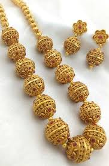
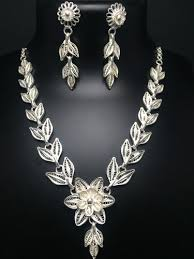
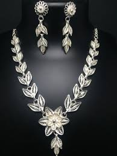
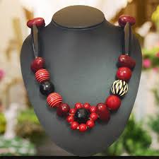
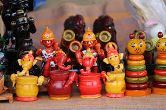
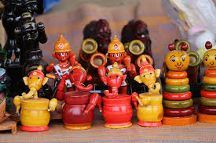

Jewellery
Handmade jewelry is jewelry which has been made by hand instead of machines. Drilling, cutting, etc. can be done with the help of machines. In earlier times, members of the royal family had their own jewelers who crafted excellent jewelry with their hands according to specific needs. Even though new jewelers have come up, the old tradition of handmade jewelry is still into existence.The one big advantage of handcrafted jewelry is that the customer gets to sit with the jeweler to decide upon the design and pattern of the jewelry. The process is a tedious one as it involves a lot of planning and finalizing on the designs and deciding on whether stones should be embedded or not. Handmade Jewelry includes bangles, bracelets, necklaces, chocker sets, earrings, etc. There are different types of handmade jewelry available.
KUNDAN JEWELLERY
The art of making Kundan jewelry is one of the oldest forms of handmade jewelry. The art is also known as “Kundankari”. Here the jewels are made from 24 carat gold, embedded with stones on one side and minakari work on the reverse side to get beautiful surfaces on both the sides. Both gold and silver is used for this work.
JADAU JEWELLERY
Jadau is a very traditional form of jewelry making practiced since the age of the Mughals in Gujarat and Rajasthan. It is a very good example of experienced craftsmanship. Even though this type of jewelry making was introduced by the Mughals, indigenous craftsmen made it the best by showing their talents and initiating new ideas into it. Jadau jewelry is jewelry in which gems, precious stones, beads and crystals are embedded and this type of jewelry is used in many traditional occasions like wedding celebrations and religious festivities.
IVORY JEWELLERY
Handmade ivory jewelry is exquisite to behold. Such jewelry is crafted from the tusks of animals like elephants, hippopotamuses, walruses, etc.
GOLD JEWELLERY
Gold is an enticing metal and women use it more often than men to adorn themselves. Apart from being used to make enchanting jewelry, gold is also used by many to salvage themselves in times of financial crisis. In India gold is regarded as an auspicious symbol of Goddess Lakshmi, the deity of wealth and prosperity. Gold jewelry never goes out of fashion and is user-friendly and adds to the beauty of the wearer.

FILIGREE JEWELLERY
Filigree work is a delicate kind of jewelry work that engages a lot of accuracy, patience and an eye for the minutest of details. This work is usually done with threads of gold and silver those are twisted and stitched or attached together.

 

BEAD JEWELLERY
Bead jewelry is one of the oldest forms of handmade jewelry and has a history of nearly five thousand years. Bead jewelry is made from silver, gold, plastics, wooden, copper, etc.

LAC JEWELLERY
Lac jewelry originated in Rajasthan and has gained immense popularity all around the world for its amazing craftsmanship. Various types of jewelry are made out of Lac such as bangles, Bajuband’s (armlets), Rakhi’s (bracelets), Gajra’s (anklets), Jod’s, etc.
PACHCHIKAM JEWELLERY
Pachchikam jewelry making is a very old form of jewelry making where stones and gems are combined with silver and other precious metals. The art of Pachchikam jewelry making is very tricky and needs immense creativity. This jewelry originated in Gujarat and Kutch.


 
